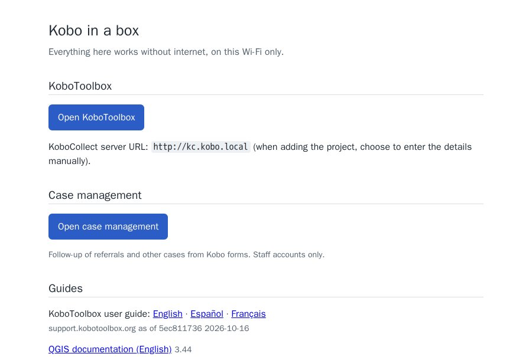
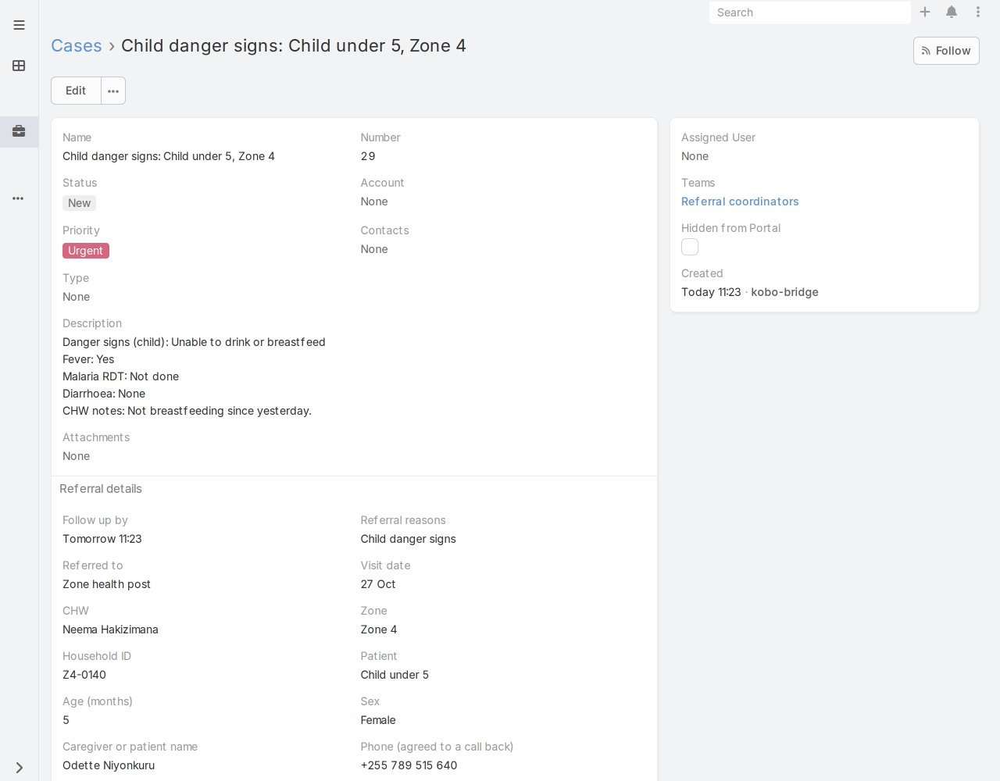
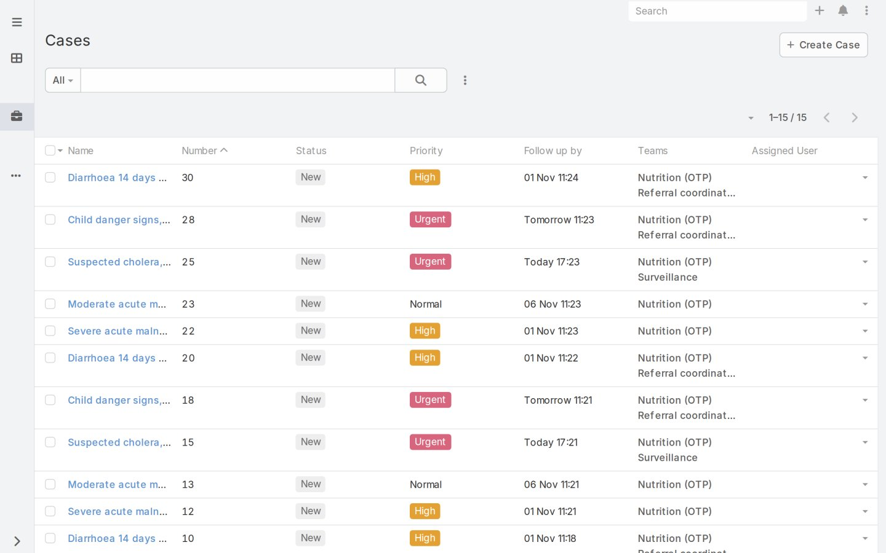
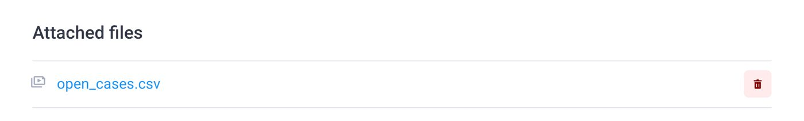
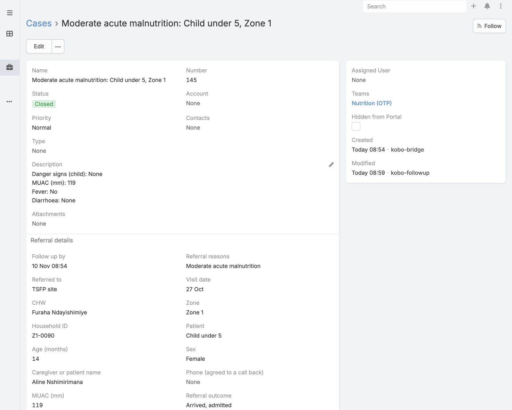
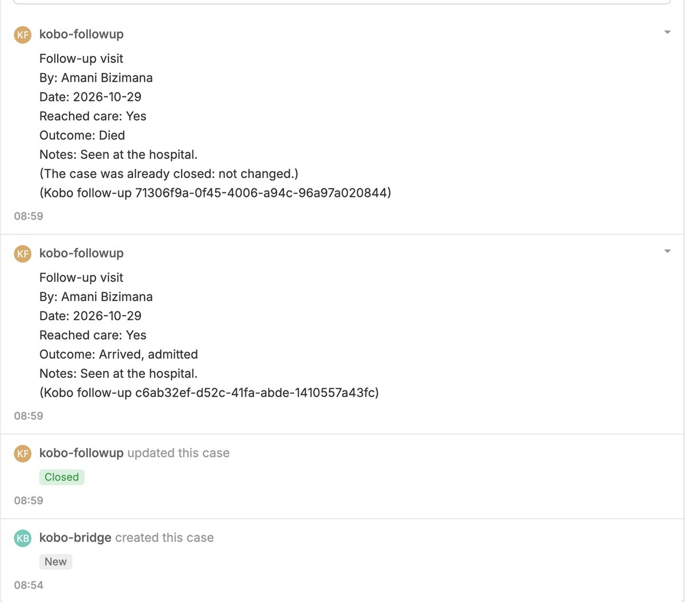
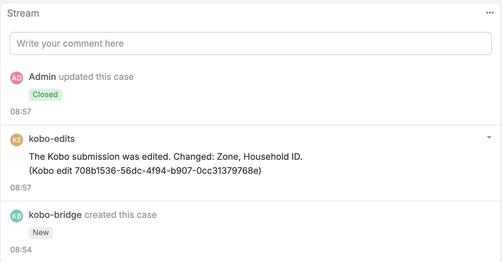
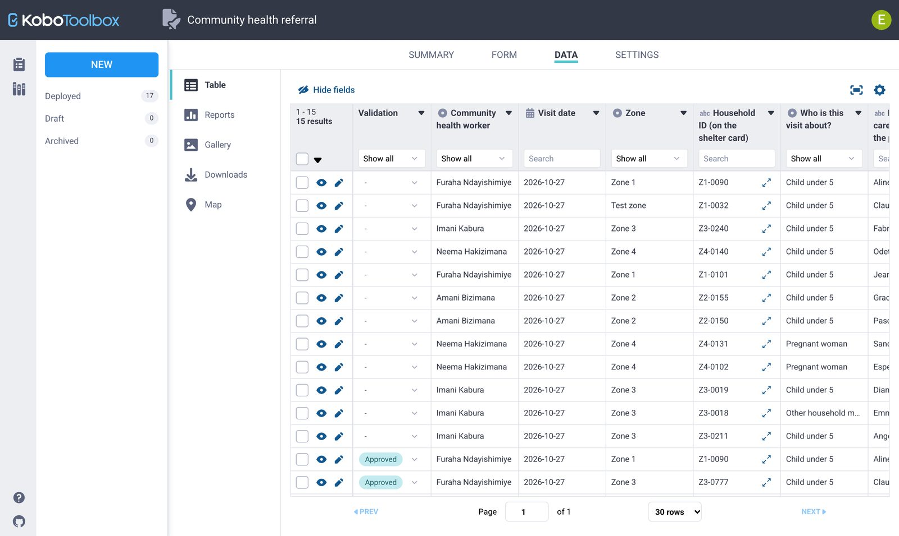
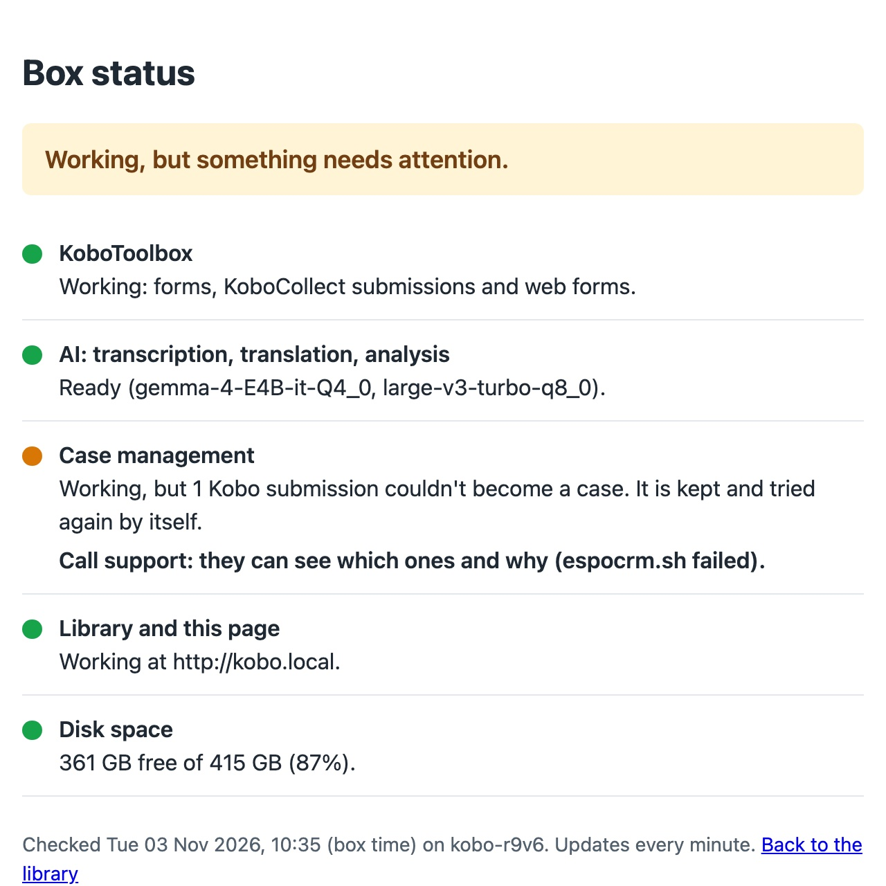

What it is
Case management is optional on the kit. When a deployment needs it, the kit runs EspoCRM, an open-source case management system, at cases.kobo.local, next to KoboToolbox. A small program on the kit, the bridge, connects the two:
- it opens a case for each submission of the referral form that needs follow-up, and routes it to a team;
- it keeps a list of open cases on the follow-up form, so health workers can pick the case they're following up;
- it writes each follow-up's outcome back onto its case;
- it updates a case when its submission is edited in KoboToolbox;
- it shows in KoboToolbox which referrals were followed up.
Everything stays on the kit: KoboToolbox, the cases and the bridge need no internet. KoboToolbox's own settings are unchanged, and after either side has been down the bridge catches up by itself without duplicating anything.


The kit was tested with one scenario, community health referrals in a displacement camp, with made-up people and places. Everything on this page uses it. Another deployment (complaints and feedback, protection referrals, shelter repairs) uses the same parts with its own forms and rules (see Adapting it).
Who does what
| Who | Uses | Does |
|---|---|---|
| Health workers (enumerators) | KoboCollect or a web form | Fill in the referral form at each visit, and the follow-up form when they go back. They need no case management account. |
| Case workers | Case management, their own account | See their team's cases, call or visit, record the outcome, close cases. They can't delete or export. |
| Supervisors | Case management, their own account | See every case, reassign them, check what's overdue. They can't delete cases. |
| Whoever looks after the kit | KoboToolbox and case management, with the administrator passwords on the label card | Share the two forms with the bridge, make staff accounts, read the status page. |
| Support | The kit's commands, over SSH | See which submissions couldn't become cases and why, change the rules for a new deployment. |
Setting it up
When the kit's bundle includes case management, the kit sets it up the first time it is switched on, together with everything else: EspoCRM with passwords nobody else has, and a KoboToolbox account for the bridge called cases-bridge. That account isn't an administrator and can only see the forms shared with it. The label card has the case management address, its administrator password, and these steps.
1. Deploy the referral form and share it with the bridge
- In KoboToolbox, deploy the referral form. Its name must be exactly the one the kit expects (for the test scenario, Community health referral).
- Open the form's Settings → Sharing, add the user
cases-bridgeand give it View submissions. Give it Validate submissions too, so the kit can show in KoboToolbox which referrals were followed up (see Edits and statuses).
2. Deploy the follow-up form and share it too
- Deploy the follow-up form (Community health referral follow-up).
- Share it with
cases-bridgewith View submissions and Edit form. The bridge needs to edit it to keep the list of open cases on it.
3. Make the staff accounts
Sign in to cases.kobo.local as admin (password on the label card). Under Administration → Users, create an account for each case worker with the role Case worker and their team, and for supervisors the role Case supervisor. The teams (for the test scenario: Referral coordinators, Nutrition (OTP), Surveillance) are already there. Then connect to the Wi-Fi and open cases.kobo.local on any phone or laptop.
Within 10 minutes of the forms being shared, the kit reads their choices (zones, health workers, referral sites) and sets up the case fields from them. Visits submitted in the meantime wait and become cases as soon as that's done; none are lost.
Day to day
A referral becomes a case
The referral form works out whether a visit needs a referral and why, as the health worker fills it in, so the phone shows where to refer. When the submission reaches the kit, the bridge opens a case within about 30 seconds: its name says what and where ("Child danger signs: Child under 5, Zone 4"), its description what the health worker found, and its details the answers that matter for follow-up. It goes to every team whose rule matches, with the highest priority and the earliest follow-up time among them:
| Referral (test scenario) | Team | Priority | Follow up within |
|---|---|---|---|
| Suspected cholera | Surveillance | Urgent | 6 hours |
| Child or pregnancy danger signs | Referral coordinators | Urgent | 24 hours |
| Bloody or persistent diarrhoea | Referral coordinators | High | 48 hours |
| Severe acute malnutrition | Nutrition (OTP) | High | 48 hours |
| Moderate acute malnutrition | Nutrition (OTP) | Normal | 7 days |


Working the cases
Case workers see their own team's cases, newest first, with the date to follow up by. They open one, call or visit, record the referral outcome, and close it. Supervisors see all of them, and can filter by team, zone, reason or what's overdue.



Follow-up visits
When a health worker goes back, or calls, they open the follow-up form in KoboCollect or the browser:
- They choose their zone. The form then lists only the open cases in that zone, each as CS-12 · Z2-0147 · Child danger signs · due 31 Oct: the case number, the household, the reason and the follow-up date.
- They pick the case. The form shows what it was referred for and by when.
- They record whether the person reached care, the outcome, and whether to close the case.

The list of open cases is a file, open_cases.csv, that the kit keeps on the follow-up form. It holds only what's needed to pick the right case (number, household, reason, zone, team, due date), never names or phone numbers, because the whole list goes to every phone that has the form.
It is updated when cases open or close, at most every 15 minutes, since each update makes phones download the form again. Phones get the new list the next time they update their forms (in KoboCollect: Get blank form, or automatic updates in the project settings).


When the follow-up reaches the kit, the bridge updates exactly that case: the outcome, and the status (closed, or pending if it isn't done). Nothing else on the case changes. It also adds a note to the case's history with everything the health worker recorded, so case workers see it even if they had changed the case since. If the case number matches no case, or more than one, nothing is guessed: the follow-up waits, and the status page says so.
A closed case is never reopened by a follow-up. It gets the note, saying the case was already closed, and stays as it is: a case worker decides whether it needs reopening.




Edits and statuses
When a submission is edited in KoboToolbox
Submissions get corrected: a wrong zone, a household ID typed twice. When someone edits a referral submission in KoboToolbox, the case follows:
- the answers that came from KoboToolbox (zone, household, ages, MUAC…) are updated, and a note says which changed;
- the priority, the teams, the status and anything staff filled in stay as they are. If the edit means the rules would now route the case differently, the note says so, for a case worker to decide;
- if the edit means the visit no longer needs a case, the case gets a note saying so and isn't closed automatically; if it now needs one, a case opens.


Case status back in KoboToolbox
The case's status goes back to its submission in KoboToolbox: a closed case marks the submission Approved, a pending one On hold. So the referral form's data table and its exports show which referrals were followed up, without opening case management. Deployments that use KoboToolbox's validation status for data-quality review can turn this off.


Changing the forms
Deployments change: a new zone in the camp, another referral site, a new health worker. Add the choice to the KoboToolbox form and redeploy it. Case management takes its choices from the form itself, so within 10 minutes the new choice works in cases too, with no one changing anything on the kit. Choices are only ever added, so older cases keep theirs. A visit that used the new choice before that happened waits and becomes a case by itself.
New questions, a different form name, other teams or routing rules are a change to the kit's rules for the deployment: ask support (see Adapting it).
When something goes wrong
The kit's status page at kobo.local/status has a row for case management:


Amber means case management works but something needs a look; nothing is lost while it's amber. Red means it isn't working: restart the kit, and if it stays red, call support.
| It says | What it means | What to do |
|---|---|---|
| Working. | Cases are opening and follow-ups arriving. | Nothing. |
| N Kobo submissions couldn't become cases. | Case management refused them (for example a choice it doesn't have yet), or a follow-up named a case that doesn't exist. They're kept and tried again: after 1 minute, 10 minutes, an hour, then every 6 hours, and straight away when the form changes. All the other submissions carry on. | Often nothing: a new choice sorts itself out within 10 minutes. If it stays, call support. |
| No cases have come from Kobo for N minutes. | The bridge can't reach KoboToolbox, or KoboToolbox refuses its account (for example after a password reset of cases-bridge). | Restart the kit. If it stays, call support. |
| Working, but new cases are not being opened. | The bridge has stopped. | Restart the kit. If it stays, call support. |
Nothing is ever dropped. For support, espocrm.sh failed lists the waiting submissions with the reason case management gave, and nothing of their answers.
Backups and replacement kits. The kit's backups (plugging in the KOBOBACKUP drive) include the cases, their history, and the submissions still waiting. Restoring onto a replacement kit brings all of it back with the old kit's passwords, with nothing to type but the backup passphrase.
The assistant
When the kit runs the assistant, it can work with cases too. Ask it, for example, which urgent cases are overdue, by team?
or summarise the open nutrition cases in zone 3
. It can list and filter cases, read one with its history, count them by team, zone, reason or status, and add a note to a case. It asks before every note, and it can't change any field, open or delete a case. It never sees the caregiver's name or phone number: case management withholds them from it.
The assistant needs the recommended computer or a graphics card; it is in testing.
Who sees what
- Case workers see only their own team's cases and can't delete or export them; supervisors see and can export all of them; only the administrator can delete.
- A caregiver's phone number is recorded only if they agreed to a call back, and reaches only the case.
- The list on the follow-up form has case numbers, household IDs, reasons, zones and dates, nothing more.
- The bridge works as four separate accounts in case management, each allowed only its own job:
| Account | Can | Can't |
|---|---|---|
kobo-bridge | Open cases from referrals; read cases | Change or delete any case |
kobo-followup | Write a follow-up's outcome and status; add notes | Change any other field, open or delete cases |
kobo-edits | Update the answers that came from KoboToolbox; add notes | Change priority, teams, status or staff's fields; open or delete cases |
kobo-assistant | Read cases (without names and phone numbers); add notes | Change, open or delete cases |
- In KoboToolbox, the bridge's account sees only the two forms shared with it.
- The kit's logs hold case numbers, counts and errors, never answers.
- Nothing leaves the kit: case management's checks for new versions are off, it sends no email, and a test with all traffic captured saw nothing go out.
- Case management is reached over plain HTTP on the kit's own Wi-Fi, as KoboToolbox is (see Limits).
Languages
Case management's screens come in about 40 languages, among them Arabic, French, Portuguese, Spanish and Turkish, but not Swahili, Hausa or Amharic. Each user can pick their own; the kit sets the default for everyone. Choice labels (zones, reasons, outcomes) come from the KoboToolbox form's translation in that language when the form has one, so they read as the health workers see them.
What was tested
On the test environment that simulates the kit, with the health referral scenario:
- 60 of 60 end-to-end checks through the real KoboToolbox: cases opened, routed and permissions held; a refused visit kept and later turned into a case by itself after the form gained the choice; follow-ups closing their case with only the outcome changed; a follow-up on a closed case added as a note only; an unknown case number kept; a submission edited in KoboToolbox updating its case; a closed case showing as Approved in KoboToolbox.
- The follow-up form in KoboToolbox's web forms (Enketo): the case list showed exactly the zone's open cases, and picking one showed its reason and due date. The list was in the form's media for KoboCollect.
- Offline: the first version (cases opening and routing) passed with all internet traffic blocked, including a cold start, and a capture of the traffic saw nothing go out. Follow-ups, edits and statuses were tested with the test environment online; they use only the kit's own KoboToolbox and case management, and will be run offline with the next round.
- Replacement kit: a backup with 60 cases restored onto a newly installed kit in 2 minutes 19 seconds; every case back, and new visits became cases through the new kit's bridge account.
- The assistant's tools checked with the standard client the assistant uses: every tool, no names or phone numbers in the answers, a wrong key refused.
- Small: about 1.6 GB of software and 200 MB of memory when idle.
Limits
- Not yet tested on a phone. The follow-up form's case list and prefill worked in the browser; KoboCollect on a phone will be tested with the kit's own Wi-Fi.
- One scenario so far. Other deployments need their own forms and rules (see below), and should be tested before use.
- Photos and repeated groups in a form don't reach the case yet, and places are a fixed list of zones, not linked records.
- No Swahili, Hausa or Amharic screens in case management.
- Plain HTTP on the kit's Wi-Fi: anyone on the network could in principle see sign-ins. Keep the Wi-Fi password to staff.
Adapting it to a deployment
A deployment's rules are one file, a template, that says:
- which KoboToolbox form, and which of its submissions become cases;
- which questions become which case fields, and what the case is called;
- the routing: which answers send a case to which team, with what priority and follow-up time;
- the follow-up form, which of its answers are written back, and which close the case;
- whether case status goes back to KoboToolbox.
The form's choices aren't copied into it: they come from the form. The test scenario's template and the technical details (the bridge, setup, the commands support uses) are in the project's remote/espocrm/ folder and its README.